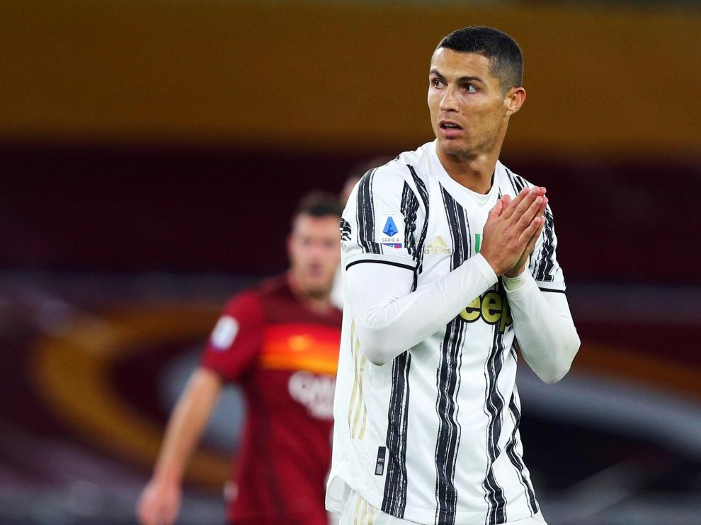
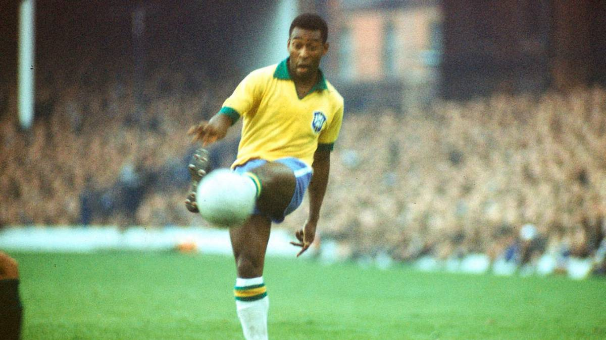
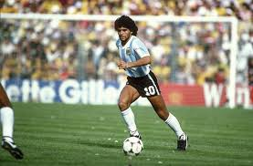
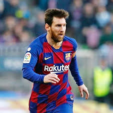

Últ. actualización: 08 de octubre de 2020
Los mejores futbolistas de la historia
5.Johan Cruyff
El holandés Cruyff profesionalizado como Mediocampista ofensivo, está en la 5ta posición debido a que cambió la historia del Barcelona y convirtió al Ajax como el mejor equipo de Europa, luego como entrenador fue uno de los exponentes del fútbol moderno, una bestia tanto dentro como fuera del campo.

4.Cristiano Ronaldo
El portugués se convirtió en leyenda tanto en Manchester United, Real Madrid y su selección Portugal, sus estadísticas, logros y premios son una bestialidad que no muchos alcanzan.

3.Pelé
El jugador Brasileño retirado logró muchas cosas, con 17 años en el mundial demostró lo que debían esperar de él, luego ganando 3 mundiales, siendo el máximo goleador de su país y por muchos reconocido como el mejor jugador del siglo XX.

2.Diego Armando Maradona
El ex jugador Argentino Diego Armando Maradona es ubicado como el segundo mejor futbolista, aunque muchos lo piden como el mejor de todos los tiempos, en cada equipo que jugó terminó siendo un ícono, también en su selección nacional, llevandolos a ganar un mundial.

1.Lionel Messi
El jugador Argentino y de Barcelona es para la mayoría el mejor jugador de la historia del fútbol, deleitando con todas sus estadísticas, con su siempre equipo Barcelona lo ha ganado todo, tanto individual como colectivamente, es el máximo exponente con su calidad.